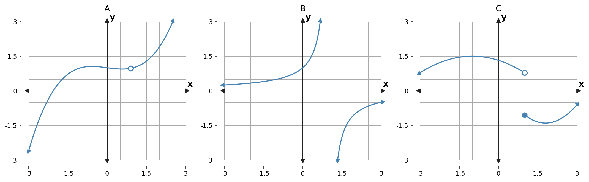
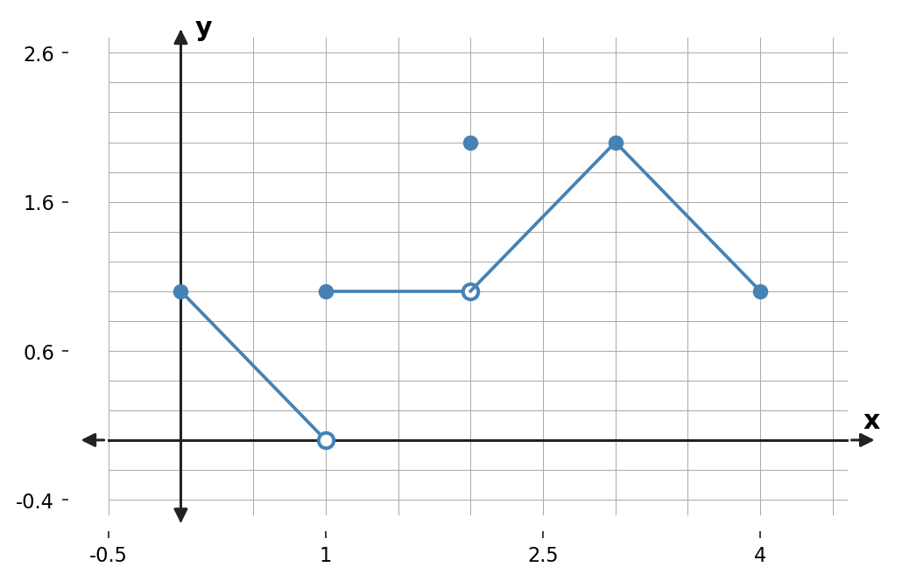
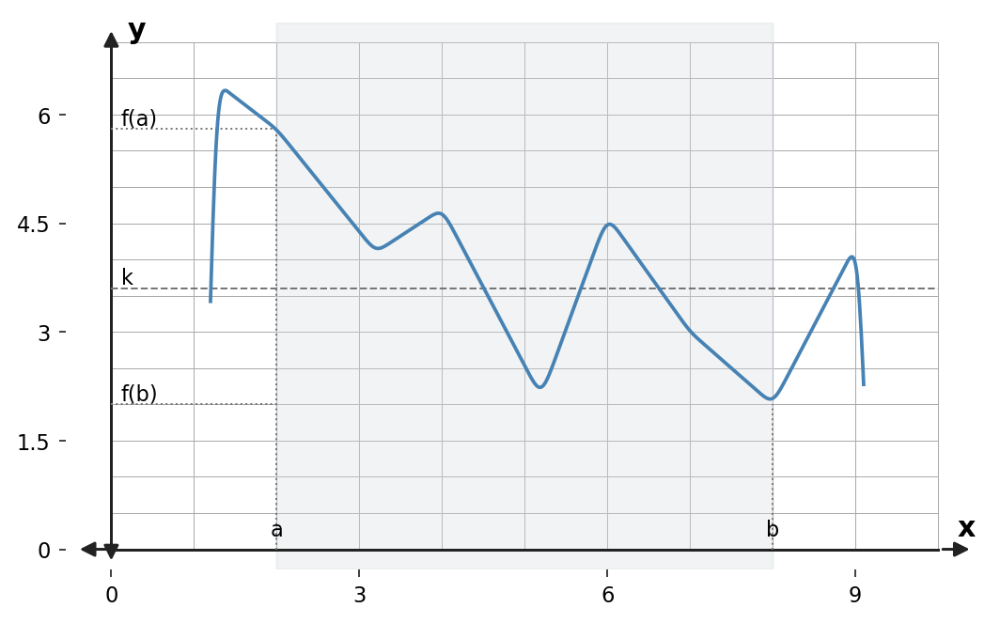

Continuity connects what a function approaches to the value it actually has.
Section Introduction
Nearby behavior and the point itself must agree
A graph can look smooth, have a hole, jump, or break near a vertical asymptote. Continuity gives us a precise way to describe those possibilities rather than relying only on the idea of drawing without lifting a pencil.
At an interior point, continuity requires the function value to exist, the two-sided limit to exist, and those two values to be equal. If a discontinuity can be repaired by redefining one function value, it is removable.
Once continuity is established on a closed interval, the Intermediate Value Theorem lets us guarantee that the function reaches every value between its endpoint outputs.
To prove continuity at a point, check the value, check the limit, and then show they are equal.
Vocabulary / Key Notation Preview
continuity · continuous at $x=c$ · removable discontinuity · non-removable discontinuity · endpoint continuity · Intermediate Value Theorem
Sort the vocabulary. Write each vocabulary word in the column that best matches what you know right now. You may move a word later.
| Know for sure | Recognize | Don't know yet |
|---|---|---|
What's To Come
PREVIEW / DECOMPOSE. Use the connected parts to see where this section is headed.
Let $f(x)=\begin{cases}x+1,&x\lt 2\\k,&x=2\\5-x,&x\gt 2.\end{cases}$
Part A
Find $\displaystyle\lim_{x\to2^-}f(x)$.
- Answer: $\lim_{x\to2^-}f(x)=3$.
- Reasoning: The left-hand piece is $x+1$, so nearby left-side values approach $3$.
- Teaching move / listen for: Have students explicitly select the left-side formula from its domain condition.
Part B
Find $\displaystyle\lim_{x\to2^+}f(x)$. Does the two-sided limit exist?
- Answer: $\lim_{x\to2^+}f(x)=3$, so the two-sided limit exists and equals $3$.
- Reasoning: The right-hand piece is $5-x$, which also approaches $3$.
- Teaching move / listen for: Require the one-sided limits to agree before writing the two-sided limit.
Part C
What must $f(2)$ equal for the function to be continuous at $x=2$?
- Answer: For continuity, $f(2)$ must equal the two-sided limit, so $f(2)=3$.
- Reasoning: Continuity at a point requires the function value to exist and equal the limit.
- Teaching move / listen for: Use this to transition from “limit exists” to the stronger requirement “continuous.”
Part D
Determine the value of $k$ that makes the three continuity requirements agree.
- Answer: $k=3$.
- Reasoning: The piecewise definition assigns $f(2)=k$, so set $k$ equal to the common limiting value.
- Teaching move / listen for: Ask students which of the three continuity conditions the parameter controls.
Example 1 · Removable and non-removable discontinuities
Which, if any, of the three graphs has a removable discontinuity?

- Answer: Graph A has the removable discontinuity. Graph B has an infinite discontinuity/vertical asymptote, and Graph C has a jump discontinuity.
- Reasoning: A removable discontinuity has a single missing/misassigned point while the two-sided limit still exists.
- Teaching move / listen for: Have students classify all three graphs, not just identify the removable one.
Example 2 · Continuity from a graph
For the function shown, identify the points or intervals where the function is continuous and the points where it is discontinuous.

- Answer: From the displayed graph, the function is discontinuous at $x=1$ and $x=2$. It is continuous on $[0,1)$, $(1,2)$, and $(2,4]$ (using one-sided continuity at the endpoints of the shown domain).
- Reasoning: At $x=1$ the one-sided limits disagree; at $x=2$ the two-sided limit is $1$ but the plotted function value is $2$.
- Teaching move / listen for: Ask students to separate endpoint continuity from interior-point continuity.
Interior Point: A function $y=f(x)$ is continuous at an interior point $c$ of its domain if
Endpoint: A function $y=f(x)$ is continuous at a left endpoint $a$ or at a right endpoint $b$ of its domain if
respectively.
Example 3 · Testing continuity at specific points
Use the same graph. For $c=1$, $2$, and $3$, find each quantity when it exists:
$$f(c),\qquad\lim_{x\to c^+}f(x),\qquad\lim_{x\to c^-}f(x),\qquad\lim_{x\to c}f(x).$$- Answer: At $c=1$: $f(1)=1$, right-hand limit $=1$, left-hand limit $=0$, so the two-sided limit DNE. At $c=2$: $f(2)=2$, both one-sided limits $=1$, so the two-sided limit is $1$. At $c=3$: $f(3)=2$ and both one-sided limits and the two-sided limit equal $2$.
- Reasoning: The same graph displays a jump-type failure, a removable failure, and a continuous point.
- Teaching move / listen for: Have students complete the four quantities in the same order each time; the routine supports accurate continuity decisions.
Example 4 · Discussing continuity algebraically
Discuss the continuity of each function.
- $\displaystyle f(x)=\frac1{x-1}$
- $\displaystyle g(x)=\frac{2x^2+x-6}{x+2}$
- $\displaystyle h(x)=\begin{cases}-2x+3,&x\lt 1\\x^2,&x\ge1.\end{cases}$
- Answer: $f(x)=\frac1{x-1}$ is continuous on $(-\infty,1)$ and $(1,\infty)$ and discontinuous at $1$. $g(x)=\frac{2x^2+x-6}{x+2}=2x-3$ for $x\ne-2$, so it has a removable discontinuity at $x=-2$ and is continuous elsewhere. The piecewise $h$ is continuous for all real $x$ because both pieces approach $1$ at $x=1$ and $h(1)=1$.
- Reasoning: Use rational-function domain restrictions and the three-part continuity test at the piecewise boundary.
- Teaching move / listen for: Ask students to justify continuity, not merely state “polynomials are continuous.”
Example 5 · Choosing k for continuity at a piecewise boundary
Determine the value of $k$ that makes the function continuous on the entire real line:
$$g(x)=\begin{cases}x^2+7,&x\ge1\\x+k,&x\lt 1.\end{cases}$$- Answer: $k=7$.
- Reasoning: At $x=1$, the defined/right-side value is $1^2+7=8$ and the left-hand limit is $1+k$. Set $1+k=8$.
- Teaching move / listen for: Have students identify which side contains the equality sign and therefore determines $g(1)$.
Example 6 · Filling a removable discontinuity
Determine the value of $k$ that makes the function continuous for all real numbers:
$$h(x)=\begin{cases}\dfrac{x^4-1}{x-1},&x\ne1\\k,&x=1.\end{cases}$$- Answer: $k=4$.
- Reasoning: For $x\ne1$, $\frac{x^4-1}{x-1}=x^3+x^2+x+1$, whose limit at $1$ is $4$. Assigning $h(1)=4$ removes the hole.
- Teaching move / listen for: Connect the algebraic cancellation directly to AP Topic 1.13: removing a discontinuity.
If $f$ and $g$ are continuous at $x=c$, then the following combinations are also continuous at $c$:
- Sums: $f+g$
- Differences: $f-g$
- Products: $fg$
- Constant multiples: $kf$, for any number $k$
- Quotients: $f/g$, provided $g(c)\ne0$
If $f$ is continuous at $c$ and $g$ is continuous at $f(c)$, then the composite $g\circ f$ is continuous at $c$.
A function $y=f(x)$ that is continuous on a closed interval $[a,b]$ takes on every value between $f(a)$ and $f(b)$.
In other words, if $y_0$ is between $f(a)$ and $f(b)$, then there is at least one number $c$ in $[a,b]$ such that
Example 7 · Reading the Intermediate Value Theorem
For the Intermediate Value Theorem:
- What requirements must be satisfied before the theorem can be applied?
- $k$ lies on which axis?
- $c$ lies on which axis?
- Answer: The function must be continuous on the closed interval $[a,b]$, and the target value $k$ (or $y_0$) must lie between $f(a)$ and $f(b)$. The target output $k$ is a $y$-value; the guaranteed $c$ is an $x$-value.
- Reasoning: IVT guarantees at least one input whose output equals the chosen intermediate value; it does not locate the input unless additional work is done.
- Teaching move / listen for: Listen for students who swap $c$ and $k$ or claim uniqueness.
Example 8 · Interpreting the Intermediate Value Theorem from a graph
Consider the continuous function shown on the interval $[a,b]$.

- Is $f$ continuous on $[a,b]$?
- Is $k$ between $f(a)$ and $f(b)$?
- If $a\lt c\lt b$, how many values of $c$ in this example satisfy $f(c)=k$?
- Label those values on the graph as $c_1,c_2,\ldots$.
- Answer: Yes, the displayed function is continuous on $[a,b]$, and $k$ lies between $f(a)$ and $f(b)$. The graph crosses the horizontal level $y=k$ three times between $a$ and $b$, so there are three displayed values $c_1,c_2,c_3$ satisfying $f(c)=k$.
- Reasoning: IVT guarantees at least one crossing; the graph happens to show three, illustrating that the theorem does not guarantee uniqueness.
- Teaching move / listen for: Use the multiple crossings to emphasize “at least one,” not “exactly one.”
Example 9 · Applying the Intermediate Value Theorem
Let
$$f(x)=\frac{x^2+x}{x-1}.$$Verify that the Intermediate Value Theorem applies on $\left[\frac52,4\right]$, and find the value of $c$ guaranteed by the theorem if $f(c)=6$.
- Answer: On $[\frac52,4]$, the denominator $x-1$ is never zero, so $f$ is continuous. $f(\frac52)=\frac{35}{6}\lt 6$ and $f(4)=\frac{20}{3}\gt 6$, so IVT guarantees a $c$ with $f(c)=6$. Solving $\frac{c^2+c}{c-1}=6$ gives $(c-2)(c-3)=0$; the value in the interval is $c=3$.
- Reasoning: The theorem first establishes existence; algebra then identifies the guaranteed value.
- Teaching move / listen for: Require the continuity statement and the between-ness check before students solve the equation.
AP Alignment Summary
Important numbering note: This textbook's Section 2.3 numbering is independent of the College Board AP unit/topic numbering.
| AP Topic | College Board Topic | How this section covers it |
|---|---|---|
| 1.10 | Exploring Types of Discontinuities | Graph classification and algebraic examples distinguish removable, jump, and infinite discontinuities. |
| 1.11 | Defining Continuity at a Point | The formal point-continuity definition is used repeatedly with function values and one-/two-sided limits. |
| 1.12 | Confirming Continuity over an Interval | Graph and algebra examples identify intervals of continuity, including endpoint behavior. |
| 1.13 | Removing Discontinuities | Parameter problems repair holes by matching a function value to the existing limit. |
| 1.16 | Working with the Intermediate Value Theorem (IVT) | Requirements, graphical interpretation, existence reasoning, and an algebraic application are all included. |
This section supplies the continuity/IVT portion of College Board AP Unit 1, with strong Mathematical Practice 3 justification whenever a theorem is invoked.
Alignment reference: AP Calculus AB — AP Central and the AP Calculus AB and BC Course and Exam Description. College Board notes that the 2026–27 update contains clarifications but does not change course content.